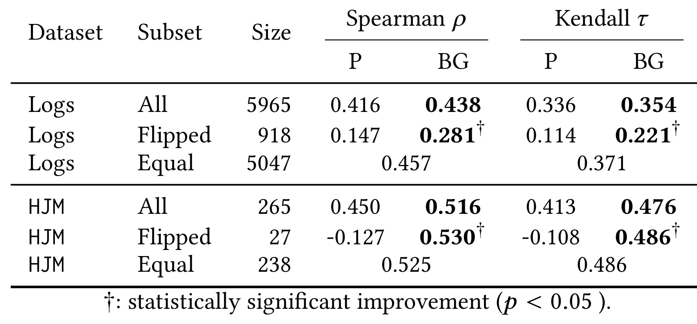
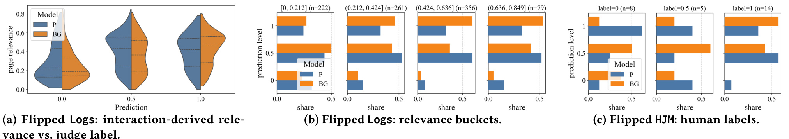
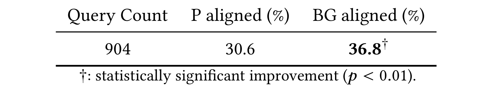
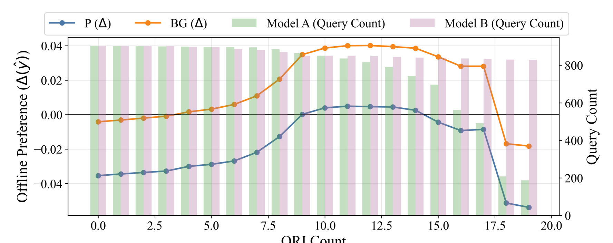

As It Was: Aligning LLM Search Evaluation with Historical User Preferences
这篇论文来自 Spotify 的生产音乐搜索评估场景，作者包括 Ali Vardasbi、Gustavo Penha、Enrico Palumbo、Claudia Hauff、Hugues Bouchard 和 Mounia Lalmas。论文入口为 arXiv:2607.01040，代码或独立项目页本轮未核验到公开链接。它关注的不是通用 LLM 评测榜单，而是一个更贴近搜索/推荐工程的问题：当离线评估开始使用 LLM-as-a-judge 时，如何让 judge 的相关性判断更接近真实用户在历史搜索中的偏好。
大规模搜索系统迭代速度已经超过人工质检的扩展能力；仅靠语义相似度或通用知识的 LLM 评价器，在长尾、多语言、意图含混和相近候选共存的查询上，可能偏离真实用户偏好。论文要解决的不是再造一个更会打分的 judge，而是把可审计的历史行为证据压缩进评估提示，使 LLM 在语义推理之外能看见用户过去如何解释这些查询。
[toc]
1. 背景和问题
搜索系统的离线评估有一个长期矛盾：模型、召回栈、排序策略和前端体验可以快速迭代，但人工标注和人工质检很难以同等速度覆盖新版本、长尾查询、多语言 query 和区域化意图。音乐搜索尤其明显，同一个字符串可能是歌曲名、歌词片段、艺人名、播客片段，也可能在不同地区指向不同的热门实体。对用户来说，正确答案未必是语义上最像 query 的实体，而是历史上相似用户在相似意图下更愿意点击、播放、停留或继续探索的结果。论文把这个场景放在 Spotify 的生产音乐搜索里，因此它关注的相关性不是静态语义匹配，而是 search engine result page 在真实用户偏好下是否可用。
LLM-as-a-judge 的吸引力在于可扩展：给定 query、locale、候选 item metadata 和评分 rubric，它可以给 SERP 或 item 打出等级相关性并给出解释。相比纯人工标注，它便宜、快、可以批量覆盖实验候选；相比只看点击率或播放率，它能读懂文本、类型和上下文，至少在清晰 query 上可以复用语言模型的世界知识。但是 Plain judge 的风险也很直接：它主要依赖语义相似度、catalog metadata 和模型已有知识。在用户实际把一个含混 query 当歌词搜、把地区流行版本当目标、或在多个同名 track 中偏好某个版本时，Plain judge 很可能按照“字面更像”或“最知名实体”作出判断，却没有看到真实历史交互给出的解释。
这篇论文的关键选择是把用户行为当成 grounding，而不是把用户行为当成唯一真值。直接用点击日志做 relevance label 会遇到曝光偏差、位置偏差、流行度偏差和历史系统偏差；完全忽略日志又会让 LLM judge 在含混场景里凭语义猜测。作者的中间路线是构造 Query-Relevance-Impressions cards，也就是 QRI cards：对每个待评估 SERP item，给 LLM 一组相似历史 query 下的去偏相关性估计和曝光量，让 judge 在原有语义判断之外，能引用一段轻量、可审计的行为证据。这样做的目标不是让 LLM 机械复制过去，而是在有歧义、近似结果和排序取舍时，把“用户过去怎么选”作为可解释先验。
从推荐系统角度看，这个问题也很熟悉。推荐/搜索的离线指标经常与线上 A/B 不完全一致，尤其当评估集不能覆盖最新内容、长尾 query 或真实用户意图分布时，离线 judge 的高分未必转化为线上增益。论文没有试图提出新的排序模型，而是评估层的改造：如果一个 LLM judge 将成为离线实验门槛、候选模型筛选器或人工质检辅助，它就不能只按语言相似度做“看起来合理”的裁判。它必须在可控范围内吸收历史偏好，同时让评审人员能回看证据来源，判断一次 relevance label 为什么变化。
这也是本文和常见 RAG 评测论文的区别。一般 grounding 更多是为了降低事实幻觉；这里 grounding 的对象不是百科知识，而是聚合后的用户行为。作者关心的不是“模型是否知道某首歌存在”，而是“当用户输入某个 query 时，历史上更像是在找哪一个实体，以及 SERP 对这种偏好是否排序正确”。因此，本篇更接近搜索评估、用户建模和离线/在线一致性的交叉工作：LLM 提供语义推理，日志提供行为先验，最终要看二者结合后是否更贴近人工标注、日志推导相关性以及 live A/B outcome。
还有一个背景细节值得提前说明：论文选择“历史偏好”而不是“当前在线点击”作为 judge 证据，是为了把评估时间线和线上实验时间线分开。这样做牺牲了一部分即时性，但能减少评估集直接偷看到实验结果的风险，也让后文的 A/B 对齐测试更像真正的离线预测。
2. 方法
2.1 两个评价器变体：只改输入证据，不改评分尺子
论文先把 SERP evaluation 写成一个共享任务：给定查询、可选上下文和一页结果，judge 输出 graded relevance label。Plain 和 Behavior-Grounded 两个变体使用同一套 rubric、同一输出空间和同一提示结构，差别只在 BG 额外看到 QRI cards。这个控制设计很重要，因为它把变量集中在“是否提供行为证据”上，而不是混入新评分标准、新 prompt 风格或不同模型版本。
符号解释：(\mathcal{E}) 表示当前 SERP 中的候选实体集合，(e_i) 是第 (i) 个结果，(y_i) 是 LLM judge 对结果或页面给出的等级相关性标签。论文没有把这个式子写成编号公式，但 Section 3 明确给出同样的对象与 label space。这个定义的工程含义是，BG 不改变业务方对“相关、不完全相关、不相关”的等级约定；它只改变 judge 在给出 (y_i) 前能看到的证据。
Plain judge 的输入是 query、context 和 item metadata，例如标题、实体类型、基础属性等。它的优点是部署简单，缺点是容易把语言相似度当作主要线索。Behavior-Grounded judge 则在相同输入上附加每个结果 item 的行为摘要，并要求模型把 QRI 当作 supporting behavioral context，而不是当前 query 的直接 ground truth。这句话是方法边界的核心：QRI 是先验和解释材料，不是允许 judge 直接抄历史点击的答案。 如果不做这个限制，行为 grounding 可能退化为“日志里什么高就判什么高”，失去 LLM 对 query 语义、item metadata 和当前 SERP 结构的推理作用。
2.2 QRI cards：把历史查询、去偏相关性和曝光量压成可引用证据
QRI card 的基本单位是一条历史查询证据。对当前待评估的结果实体 (e)，系统从最近一段搜索日志中寻找与 (e) 相关的历史 query (q')，统计该实体在这些历史 query 下的曝光和交互，并给出一个去偏后的相关性估计。论文用 Query-Relevance-Impressions 命名很直白：Query 表示历史 query，Relevance 表示从交互推导出的相关性，Impressions 表示该证据的曝光量或支持强度。
符号解释：(q') 是历史查询，且在受控离线评估中不应与当前 query (q) 近重复；(e) 是当前 SERP 中的结果实体；(\hat r(e,q')) 是从历史交互估计的去偏相关性；(I(e,q')) 是实体 (e) 在历史查询 (q') 下的曝光量。这个结构的价值在于压缩：LLM 不需要读完整日志，只要看到少量 query、相关性和曝光量，就可以判断某个实体的历史行为支持是否强，且人类 reviewer 也能回看每条证据是否合理。
为了控制 prompt 长度，作者不是把所有历史 query 都塞给 BG。对每个结果 item，相关历史 query 会按与当前 query 的语义相似度排序，只保留 top-(k)，论文设置 (k=10)。这个设计有两个作用：第一，限制证据预算，避免热门实体靠大量历史 query 把上下文挤满；第二，让 QRI 更像“与当前查询邻近的历史解释”，而不是粗糙的全局流行度。很多 item 在过滤后实际少于 10 条证据，因此 QRI 的大小会随历史支持自然变化。
2.3 去偏、证据预算与泄漏过滤：让行为先验可用但不泄题
行为日志不能直接当 relevance，因为点击和播放受到位置、曝光、默认排序和历史系统的影响。论文说明 (\hat r(e,q')) 使用 inverse propensity scoring 进行位置去偏，具体 propensity curve 可以来自 randomized experiments，也可以由标准 click model 估计；方法只要求 propensity 单调，不依赖某一个 click model 的闭式形式。原文没有给出完整编号公式，因此下面是对论文文字的操作化解释，而不是作者提供的精确实现式。
符号解释：(\mathcal{I}(e,q')) 表示实体 (e) 在历史查询 (q') 下的曝光样本集合，(c_j) 是第 (j) 次曝光后的交互信号，(p_{\mathrm{pos}(j)}) 是该位置被检查到的倾向概率。式子的直觉是，低位置被看见概率更低，如果它仍然产生交互，就应该获得更高权重；高位置天然更容易被点，不能把所有点击都等价解释为更强偏好。实际生产实现会比这个解释式更复杂，但论文的可复用思想就是先降低位置偏差，再把结果压成 (\hat r) 供 LLM 引用。
在 Logs 数据集里，作者还需要从 item-level 的历史相关性转成 page-level relevance，因为 judge 的评估对象是 SERP 页面。论文说 page relevance 使用 DCG-weighted average of item relevance estimates，可以理解为按排序位置对 item 相关性加权：越靠前的结果对页面质量影响越大。
符号解释：(R_{\mathrm{page}}) 是页面级相关性，(i) 是结果在 SERP 中的位置，(w_i) 是 DCG 风格的位置权重，(\hat r(e_i,q)) 是第 (i) 个结果的相关性估计。这个公式解释了为什么“结果有但排低”仍然会扣分，也解释了 BG 在 ranking sensitivity 场景中更严格：如果历史偏好最强的实体没有排在靠前位置，页面级质量会受到更大影响。
最后是泄漏过滤。若 QRI 中包含当前评估 query 本身或近重复 query，BG 可能直接恢复这条 query 的历史行为，从而高估 grounding 的贡献。论文在受控离线设置中排除与当前 query cosine similarity 大于 0.9 的历史 query；例如当前 query 是 “basketball warmup music” 时，近重复的 “basketball warmup playlist” 会被排除，而 “basketball training music” 可以保留。这个过滤是评估可信度的关键边界：论文想证明 BG 能从相似历史行为泛化，而不是偷看同一 query 的答案。 生产环境可以保留近重复 query 来提升实际评估能力，但离线实验必须先把泛化能力测清楚。

这张表在站点版方法段中作为评价器变体的视觉锚点：Plain 与 Behavior-Grounded judge 使用同一评分尺子，但后者在输入中加入历史行为证据。先把这个表放在方法段，可以明确后续实验比较的是 evidence injection，而不是换 judge、换 relevance label 或换在线系统。
3. 实验结果
3.1 Logs 与 HJM：整体相关性和 disagreement 子集
论文先做两类离线评估。第一类是 Logs dataset：作者从 10 天内由 20 到 400 个用户发出的约 5000 个 query 中采样，构造 5965 个 recomposed SERP，每页采样 3 到 5 个真实相关 item，故意形成高质量和 degraded 配置。这样做可以让系统观察到当高相关 item 被省略、排低或被相近 item 替代时，Plain 和 BG judge 是否能分辨页面质量。第二类是 HJM dataset，即 265 个跨五种语言的人工标注 SERP 实例，使用三档 relevance label。指标上，作者报告 Spearman (\rho) 和 Kendall (\tau)，并专门看 flipped subset，也就是 Plain 与 BG 给出不同等级判断的样本。
Table 1 的主线很清楚：在 Logs 全量样本上，BG 的 Spearman 从 0.416 提到 0.438，Kendall 从 0.336 提到 0.354，绝对提升不大，但方向一致；在 Logs Flipped 子集上，BG 的 Spearman 从 0.147 提到 0.281，Kendall 从 0.114 提到 0.221，且标注为统计显著。这个子集更能说明 grounding 的作用，因为如果 P 和 BG 本来就同意，额外证据很难改变结论；真正需要行为先验的，是两者发生分歧的含混页面。HJM 上也类似：全量 Spearman 从 0.450 到 0.516，Kendall 从 0.413 到 0.476；HJM Flipped 中 Plain 甚至为负相关，而 BG 到 0.530 和 0.486。这里不能解读成 BG 已经接近完美人工 judge，论文也承认 absolute correlation 仍然 moderate；更稳妥的结论是，当行为证据改变了 LLM 判断时，改变方向更常与人类或交互推导相关性一致。
Equal 行也值得注意。Logs Equal 和 HJM Equal 没有 P/BG 分列，因为两者判断一致，表中给出共同相关性。这说明 QRI 不是无差别地把所有页面往更高或更低 relevance 推，而是在一部分 ambiguous 或 contested case 中触发。对生产评估来说，这是一个好性质：如果清晰 query 本来可以靠语义和 metadata 判断，BG 不应该过度改写；如果 query 需要行为证据，BG 才应该把历史偏好纳入判断。
3.2 flipped instances：行为 grounding 具体改了哪些判断
只看相关性表还不够，因为相关性提升可能来自少数极端样本，或来自整体分布偏移。Figure 1 专门分析 flipped instances，也就是 P 和 BG disagree 的样本。图中左侧是 Logs flipped 样本里不同 judge label 对应的 interaction-derived page relevance 分布，中间是 Logs relevance buckets，右侧是 HJM human labels。它回答的问题是：BG 改变 label 时，是不是更常把高分给真实更相关的页面，把低分给真实更弱的页面。

Figure 1a 显示，当 judge 给出最高 label=1 时，BG 对应的 page relevance 分布整体更高；当 BG 给低分时，对应页面的底层相关性也更低。Figure 1b 和 1c 则把这个现象拆到 relevance bucket 和 human label 上：在更高相关性 bucket 中，BG 更常给高等级；在低相关性或低人工标签区域，BG 不容易过度给高分。这个图支持论文 Section 6 的三类效果：第一，resolving ambiguity，例如用户输入歌词片段时，Plain 可能按标题精确匹配惩罚 SERP，BG 会看到历史上用户其实常点某首包含该歌词的歌；第二，calibrating severity，当 QRI 显示用户强烈指向某个实体时，BG 对缺失或低排会更严格；第三，ranking sensitivity，当多个候选都语义合理时，BG 会比较它们的历史行为强弱，而不满足于“页面里有相关东西”。
这个诊断对搜索/推荐评估很关键，因为 offline judge 最危险的不是平均相关性略低，而是在有业务含义的 disagreement case 中给错方向。比如一个 query 可能按字面看像 title search，但用户历史上其实把它当 lyric search；一个同名 track 的 re-recording 在语义上合理，但用户实际偏好 original version；一个 playlist 包含目标 track，语义 judge 可能判太松或太严，行为证据能校准用户是否接受这种 indirect result。QRI card 的优势不是让 LLM 拥有更多文本，而是让它在这些分歧处有可审计证据可以引用，人工 reviewer 可以检查“为什么这条历史 query 支持这个判断”。
3.3 在线 A/B 对齐：离线 judge 是否猜中真实 winner
离线相关性和人工标注提升还不能证明它能服务线上实验，所以论文进一步拿一个生产 A/B test 做验证。实验比较 Model A 和 Model B 两个 ranking systems，运行一周，采样 904 个 query。构造 QRI 的行为证据来自 A/B test 前一个月、并在测试开始前一周结束，避免历史证据和在线结果存在时间重叠。每个 query 从两个模型各采样三个 SERP instance，judge prediction 和 online outcome 都在 query level 聚合，然后看 sign alignment：离线 judge 预测的 winner 方向是否与线上观测 winner 一致。
符号解释：(\Delta \hat y_q) 是离线 judge 对 Model A 与 Model B 的平均预测差，(\Delta y_q) 是线上观测 outcome 的差，(\mathrm{sign}) 比较二者方向是否同号。这个公式强调，Table 2 测的不是相关性大小，而是离线评估是否能在 query 粒度猜中线上哪一个模型更好。

Table 2 的数值并不夸张，但很有生产含义：904 个 query 上，Plain judge 与线上 winner 方向一致的比例是 30.6%，BG 是 36.8%，并且 (p<0.01)。绝对一致率仍然偏低，说明用 LLM judge 预测线上胜负本来就是困难任务，不能把 BG 当成线上实验替代品；但相对 Plain 的提升表明，行为 grounding 能在一定程度上把离线评估往真实用户响应方向拉近。这里的“moderate alignment”反而是可信表达，因为生产搜索中的线上 outcome 受展示策略、会话上下文、用户群体、时段、探索流量和多目标优化影响，不可能被一个离线 judge 完整复刻。对实际评估平台来说，这张表更适合被读成“候选模型预筛信号质量提高”，而不是“离线 judge 可以直接决定上线”。如果一个系统每天要筛很多 ranking 变体，36.8% 仍然不足以单独决策，但它可以减少明显与用户偏好相反的离线判断，帮助人工评审把注意力放在分歧最大的 query segment 上。

Figure 2 解释了 Table 2 背后的条件：横轴是最低 SERP-level qri_count 阈值，表示只保留 QRI 支持量至少达到 (t) 的累计 query 子集；纵轴是离线 judge 对 Model A 相对 Model B 的 preference 差 (\Delta(\hat y))，零线以上表示偏向 Model A，图中绿色和紫色柱显示两个模型在对应阈值下的 query count。线上 ground truth 指向 Model A。BG 的橙线在较低支持量时更接近零，随后在 qri_count 增加时更早穿过零线并进入正向区域；论文文字说明在 qri_count 大于等于 5 时 BG 已与线上偏好方向一致，大于等于 9 时达到统计显著正向对齐。Plain 的蓝线更慢接近零，且没有达到同等正向确认。这个图给出的工程启发是，行为 grounding 的可靠性依赖证据量：冷启动或极长尾 query 上 QRI 稀疏，BG 仍会退回语义推理；中等证据量时，历史行为能更有效地校准 judge；最高 qri_count 区间样本变少，曲线又会受 bucket composition 和方差影响。
把三组证据放在一起看，论文的结论是保守但有价值的。Logs/HJM 说明 BG 与离线行为相关性、人类 relevance label 更一致；flipped diagnostics 说明这种一致性不是整体偏移，而是集中在 Plain 和 BG disagreement 的困难样本；A/B sign alignment 说明这种改变在 live outcome 上也有一定方向收益。它没有证明 QRI 可以替代人工标注、替代线上实验，也没有证明所有行为日志都能安全用作 judge grounding；它证明的是一个更小的命题：在生产音乐搜索里，把去偏、压缩、可审计的历史行为证据提供给 LLM judge，可以让 judge 在含混和排序取舍场景里更接近用户过去实际表达的偏好。
4. 总结
4.1 我的判断
我认为这篇短论文的价值在于把 LLM judge 从“语义裁判”往“行为证据裁判”推进了一步。它没有引入复杂模型，也没有主张 LLM 能独立判断真实用户满意度；它的工程含义是，在搜索/推荐评估中，judge prompt 里应该显式暴露一类可审计的行为先验，让模型在含混 query、近似候选和排序敏感场景下少凭直觉。对工业推荐来说，这比单纯换更强 LLM 更重要，因为强模型也可能用世界知识或语义相似度自信地给出错误解释，而 QRI 至少提供了可追溯的用户偏好锚点。
4.2 工程启发与复现建议
第一，QRI card 的设计值得迁移到召回、搜索和重排离线评估。很多系统已经有 query-item、user-item 或 session-item 的聚合行为特征，但通常这些特征用于模型训练，不用于评估解释。把它们压缩成 judge 可读证据，可以让离线评估更贴近用户偏好，同时保留人工 audit 入口。第二，复现时要优先实现去偏和泄漏过滤，而不是只把点击量塞进 prompt；没有 IPS、曝光量和 near-duplicate filtering，实验很容易变成“热门 item 更高分”或“同 query 历史答案泄漏”。第三，A/B 对齐不应只看全量平均，还要按证据量分桶。Figure 2 说明 qri_count 太低时 BG 的优势有限，太高时样本可能稀疏；真正适合自动化评估门槛的可能是中等行为支持量的 query segment。
4.3 局限与后续跟进
局限至少有四点。其一，实验场景是 Spotify music search，实体类型、用户行为和 query ambiguity 都很有音乐域特点，迁移到电商、短视频、广告或通用 Web search 时，QRI 的证据字段和偏差结构会改变。其二，历史行为本身带有系统偏差和流行度偏差，即使做了 propensity correction，也可能放大既有曝光优势或地区偏见。其三，A/B sign alignment 的绝对值仍然 moderate，BG 只能作为离线评估辅助，不应替代线上实验。其四，论文未公开代码和完整数据，很多实现细节如 propensity curve、商业 LLM prompt、QRI 文本格式和日志窗口选择无法独立复核。
后续我会重点跟三件事。第一，看是否有后续工作把 QRI 从 query-item 层扩展到 user segment、session context 或多轮搜索轨迹，因为这些信息可能更接近真实偏好。第二，关注行为 grounding 与 fairness/privacy 的冲突：当历史行为反映群体偏差或敏感偏好时，judge 是否应该引用、如何脱敏、如何解释。第三，尝试在推荐/搜索内部评估中做一个小规模 ablation：Plain judge、只给热门度、给去偏 QRI、给近重复过滤 QRI 分别比较，重点看 disagreement case、人工复核一致率和线上实验方向，而不是只看平均分。这样才能判断本文路线在音乐搜索之外是否真的稳健。